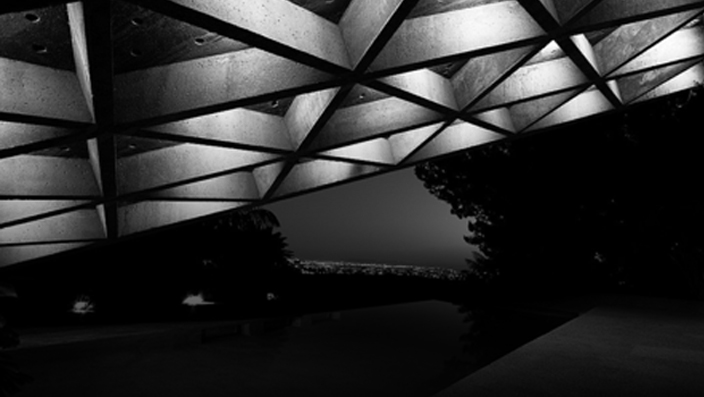
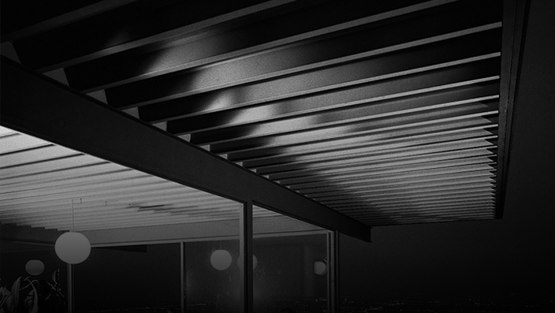
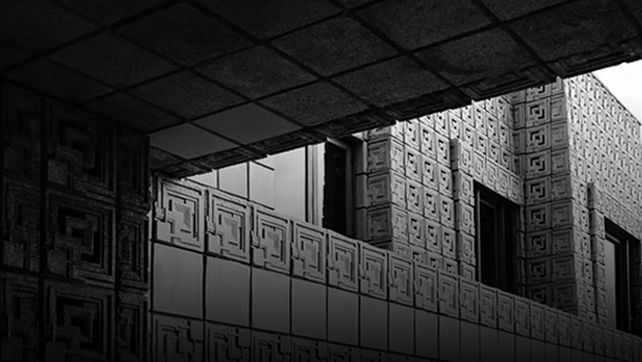
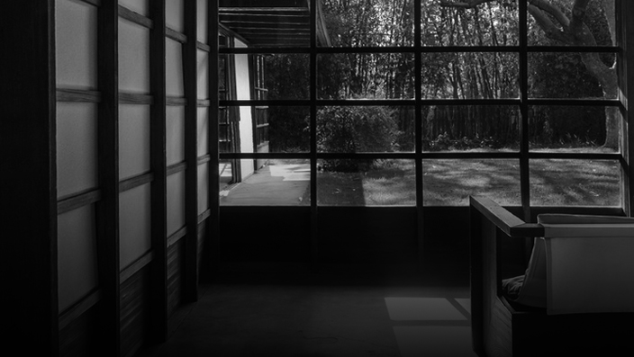
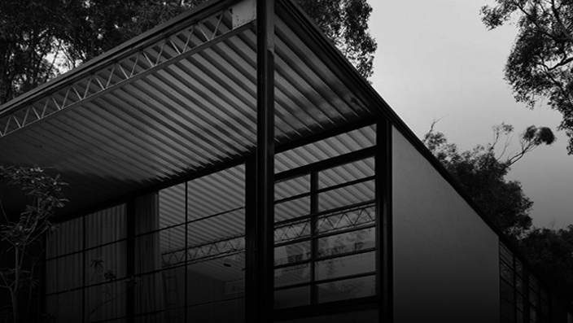

HOME
PORTFOLIO
CONTACT
modern
architecture
los angeles
Portfolio

John Lautner - 1963 | © VHF
Sheats - Goldstein House

Pierre Koenig - 1959 | © Julius Shulman
Stahl House

Frank Lloyd Wright - 1924 | © Kirk McKoy
Ennis House
Richard Neutra - 1929 | © Julius Shulman
Lovell Health House

Rudolph Schindler - 1922 | © Studio Schimpf
Schindler House

Charles en Ray Eames - 1949 | © Eames Foundation
Eames House